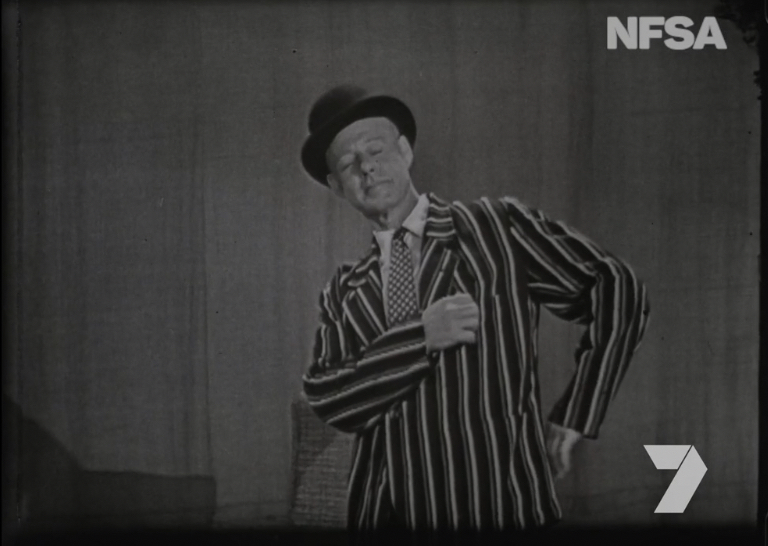
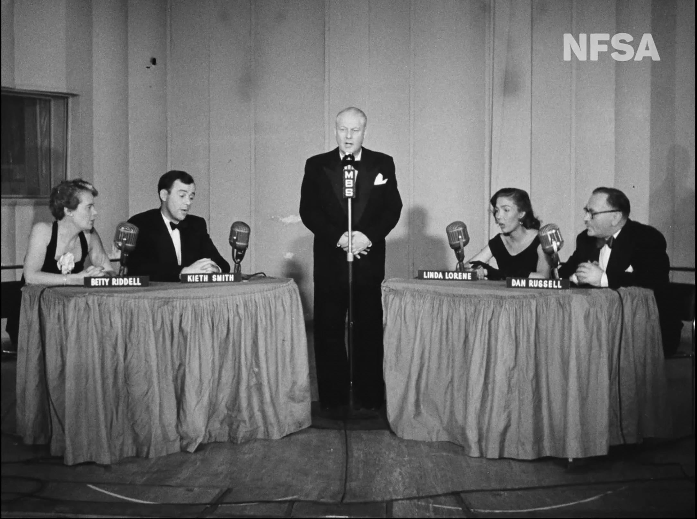
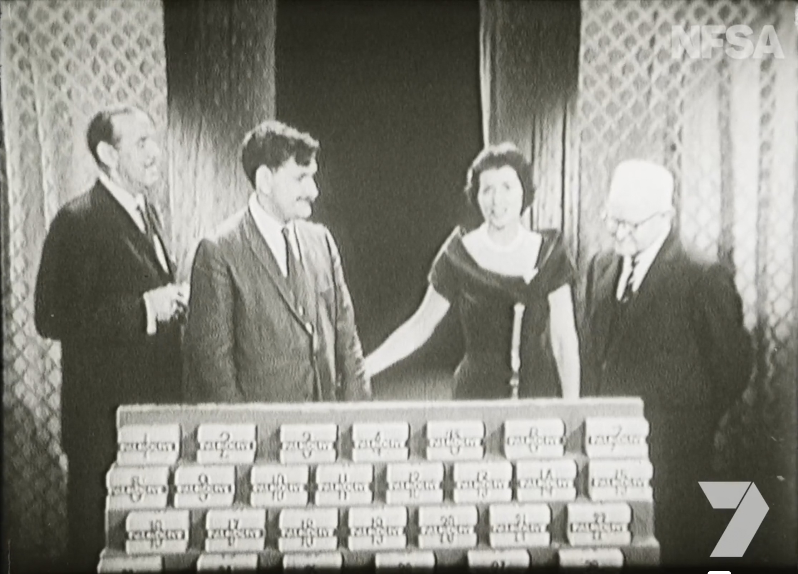
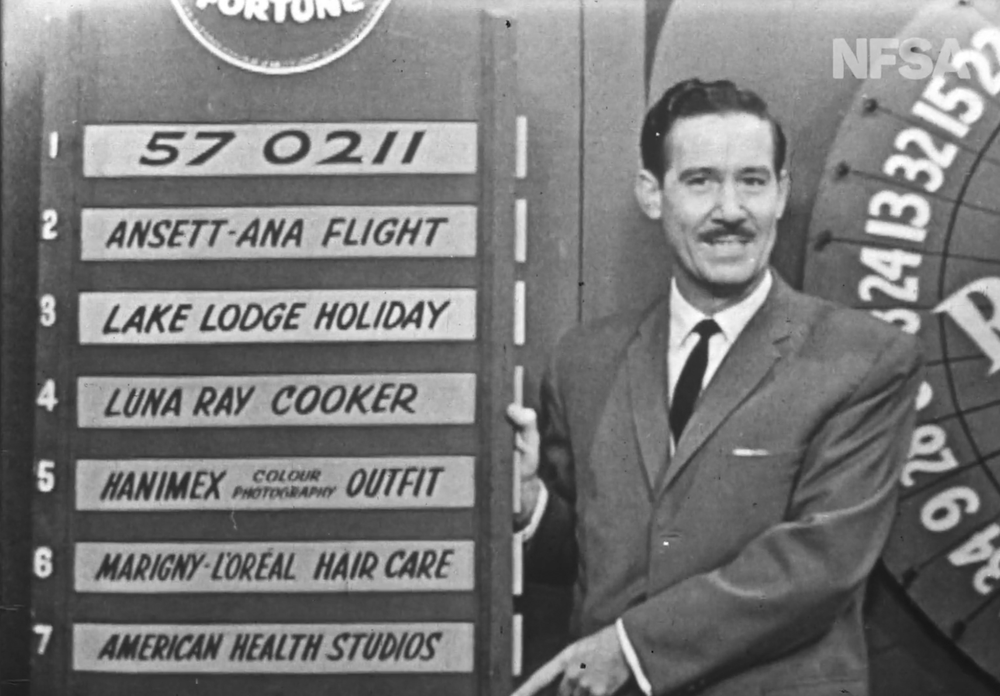
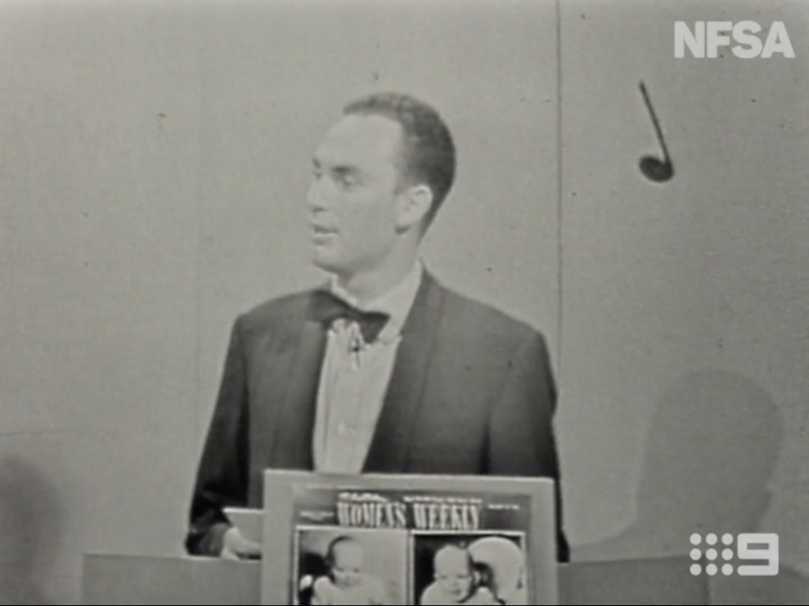

1957The Pressure Pak Show
A 1957 quiz show hosted by Jack Davey, where contestants guessed phrases from a series of clues
NATIONAL FILM AND SOUND ARCHIVE
Explore Australian television game shows from the 1950s to now, through archival footage and stories from the NFSA collection.
THE ARCHIVE
The beginning of Australian television and the first generation of local game and quiz shows.

1957A 1957 quiz show hosted by Jack Davey, where contestants guessed phrases from a series of clues

1953A publicly unseen pilot hosted by radio star Jack Davey — possibly Australia's very first television game show, filmed three years before TV officially launched.

1957Husband-and-wife duo Bob and Dolly Dyer hosted this beloved quiz, where contestants could win — or lose — a mystery prize hidden in a box.

1959An early quiz show from producer Reg Grundy, continuing the trend of radio-turned-television game formats in the late 1950s.

1957A 1957 Australian television game show featuring music, questions and contestants.
ABOUT PLAY BACK
PLAY BACK invites you to journey through the
National Film and Sound Archive’s collection of
iconic Australian game shows by decade. Wonder through the decades, press play, and discover the games that had Australia watching.
This project was produced by students in the Faculty of Arts & Design from the University of Canberra, 2026.